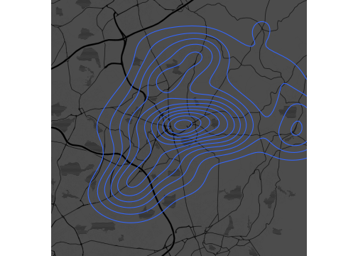

ggmap
RaukR, 2019.
Sebastian DiLorenzo
12-Jun-2019


This exercise will show you how to use ggmap to produce maps and combine them with data and the ggplot2 skills you have learned for geospatial visualisation.
1 Installing requirements
Lets start by installing and loading the required packages. Note that we are using the github version of ggmap. If you have already installed some of the packages you can skip those.
devtools::install_github("dkahle/ggmap")
install.packages(c("ggplot2","tidyverse"))
library(ggmap)
library(ggplot2)
library(tidyverse)2 Maps | get_stamenmap() and ggmap()
As the name suggests, the get_stamenmap() function from ggmap is used to get maps. The maps are of the class ggmap and you can get many different maptypes.
- Use
get_stamenmap()to get a ggmap object of your hometown or current city and plot it usingggmap(). Try out a few maptypes.
Note: Some maps are pretty big, so try to save them so you don’t have to query and redownload the maps multiple times once you find the size you want.
visby.map <- get_stamenmap(c(left = 18.265071, bottom = 57.631000,
right = 18.306766, top = 57.649192),
zoom = 14)
ggmap(visby.map)Trying out some other maptypes:
visby.watercolor.map <- get_stamenmap(c(left = 18.265071, bottom = 57.631000,
right = 18.306766, top = 57.649192),
zoom = 14, maptype = "watercolor")
visby.tonerlines.map <-get_stamenmap(c(left = 18.265071, bottom = 57.631000,
right = 18.306766, top = 57.649192),
zoom = 14, maptype = "toner-lines")
#extent="device" : removes long/lat axes
ggmap(visby.watercolor.map, extent="device")
ggmap(visby.tonerlines.map, extent="device")3 Add data to the map
Being able to output maps is great but, as with everything in life, it becomes more interesting when you can overlay it with data.
3.1 Points | geocode() and geom_point()
ggmap::geocode() is a nifty function that returns the latitude and longitude of a location. Regrettably, we can’t use it this time because of googles new API key rules.
- Use https://www.google.com/maps, or some other service, to find the longitudes and latitudes of some locations. Your favourite gym or restaurant for example?
In my example code, I show how to use a tibble of locations and geocode() to get coordinates for several locations and bind them together. Since we can’t use geocode() I also show how to create a tibble of locations, longitudes and latitudes directly.
- Create a
tibblewith location, lon and lat.
#Create a tibble of Visby's most important locations
visby.locations <- tibble(location = c("Mullbärsgården, Visby",
"Visby Hostel, Visby",
"Glassmagasinet, Visby"))
#Get the geocode, the latitude and longitude, of the locations
visby.geo <- geocode(visby.locations$location)
#Create a data.frame of the data for easier plotting
visby.places <- cbind(visby.locations,visby.geo)
#Create the tibble manually
visby.places <- tibble(
location = c("Mullbärsgården, Visby",
"Visby Hostel, Visby",
"Glassmagasinet, Visby"),
lon = c(18.29203,18.28998,18.28720),
lat = c(57.64182,57.63851,57.63729))- When you have your locations dataset ready, use
geom_point()to add markers to your map for your locations. Feel free to usegeom_text()to also add labels for your locations. Notice that you can treat theggmap()function likeggplot().
ggmap(visby.watercolor.map, extent="device") +
geom_point(data = visby.places, aes(x = lon, y = lat), color = 'red', size = 3) +
geom_text(data = visby.places, aes(label = location), hjust=0, vjust=-1)3.2 Pubs
What do they mean by pubs? Do they mean publications? Nope! We are going to plot actual pubs, bars & inns in the UK using a public dataset from https://www.getthedata.com/open-pubs.
Download the dataset pubs.rda from course materials.
Note: I have processed this data slightly, if you want you can see how below, but it is not important for this exercise.
#Read the dataset
pubs <- read.csv("open_pubs.csv", stringsAsFactors = F)
#Set column names
colnames(pubs) <- c("fsa_id","name","address","postcode","easting","northing",
"latitude","longitude","city")
#Convert long/lat to numeric
pubs$latitude <- as.numeric(pubs$latitude)
pubs$longitude <- as.numeric(pubs$longitude)
#Remove any rows with NA values
pubs <- pubs[complete.cases(pubs),]Use what you have learned so far to complete as many tasks as you have time for. There is some help code and example plots of the town “Oldham” below, but really try to do it yourself.
- Load
pubs.rdainto R. - Subset the dataset to a city.
- Get a map of the city with
ggmap. - Plot the position of the pubs onto the map using
geom_point. - Create another plot where you plot the density lines of pubs using
geom_density2d.
- Optional: Feel free to select an appropriate maptype that isn’t so busy with text, I suggest the darker toner ones.
- Fill the density lines by overlaying with
stat_density_2das well. Use parametergeom = "polygon".
- Tip: You can use
scale_fill_gradient2andscale_alphato adjust colors and alpha.
Example code:
Task 4:
ggmap(oldham.map, extent="device") +
geom_point(data = oldham.pubs, aes(x = longitude, y = latitude),
color = 'red', size = 2)Task 5:
ggmap(oldham.toner.map, extent="device", darken = .7, legend = "bottomright") +
geom_density2d(data = oldham.pubs, aes(x = longitude, y = latitude))
Task 6:
ggmap(oldham.toner.map, extent="device", darken = .7, legend = "bottomright") +
geom_density2d(data = oldham.pubs, aes(x = longitude, y = latitude)) +
stat_density_2d(data = oldham.pubs, aes(x = longitude, y = latitude,
fill = ..level..,alpha = ..level..), geom = "polygon", color = NA)Task 6, tweaked:
ggmap(oldham.toner.map, extent="device", darken = .7, legend = "bottomright") +
# Commenting geom_density2d, it is prettier without the lines =)
#geom_density2d(data = oldham.pubs, aes(x = longitude, y = latitude)) +
stat_density_2d(data = oldham.pubs, aes(x = longitude, y = latitude,
fill = ..level..,alpha = ..level..), geom = "polygon", color = NA) +
scale_fill_gradient2("Pubs", low = "white", mid = "yellow",
high = "red", midpoint = 125) +
scale_alpha(range = c(0.05, 0.30), guide = FALSE)4 Session info
## R version 3.6.0 (2019-04-26)
## Platform: x86_64-apple-darwin15.6.0 (64-bit)
## Running under: macOS Mojave 10.14.5
##
## Matrix products: default
## BLAS: /Library/Frameworks/R.framework/Versions/3.6/Resources/lib/libRblas.0.dylib
## LAPACK: /Library/Frameworks/R.framework/Versions/3.6/Resources/lib/libRlapack.dylib
##
## locale:
## [1] en_US.UTF-8/en_US.UTF-8/en_US.UTF-8/C/en_US.UTF-8/en_US.UTF-8
##
## attached base packages:
## [1] stats graphics grDevices utils datasets methods base
##
## other attached packages:
## [1] ggmap_3.0.0 forcats_0.4.0 stringr_1.4.0 dplyr_0.8.1
## [5] purrr_0.3.2 readr_1.3.1 tidyr_0.8.3 tibble_2.1.2
## [9] tidyverse_1.2.1 ggplot2_3.1.1 captioner_2.2.3 bookdown_0.11
## [13] knitr_1.23
##
## loaded via a namespace (and not attached):
## [1] tidyselect_0.2.5 xfun_0.7 haven_2.1.0
## [4] lattice_0.20-38 colorspace_1.4-1 generics_0.0.2
## [7] htmltools_0.3.6 yaml_2.2.0 rlang_0.3.4
## [10] pillar_1.4.1 glue_1.3.1 withr_2.1.2
## [13] modelr_0.1.4 readxl_1.3.1 jpeg_0.1-8
## [16] plyr_1.8.4 munsell_0.5.0 gtable_0.3.0
## [19] cellranger_1.1.0 rvest_0.3.4 RgoogleMaps_1.4.3
## [22] evaluate_0.14 labeling_0.3 broom_0.5.2
## [25] Rcpp_1.0.1 scales_1.0.0 backports_1.1.4
## [28] jsonlite_1.6 rjson_0.2.20 hms_0.4.2
## [31] png_0.1-7 digest_0.6.19 stringi_1.4.3
## [34] grid_3.6.0 bitops_1.0-6 cli_1.1.0
## [37] tools_3.6.0 magrittr_1.5 lazyeval_0.2.2
## [40] crayon_1.3.4 pkgconfig_2.0.2 MASS_7.3-51.4
## [43] xml2_1.2.0 lubridate_1.7.4 assertthat_0.2.1
## [46] rmarkdown_1.13 httr_1.4.0 rstudioapi_0.10
## [49] R6_2.4.0 nlme_3.1-140 compiler_3.6.0Built on: 12-Jun-2019 at 22:35:41.
2019 • SciLifeLab • NBIS • RaukR